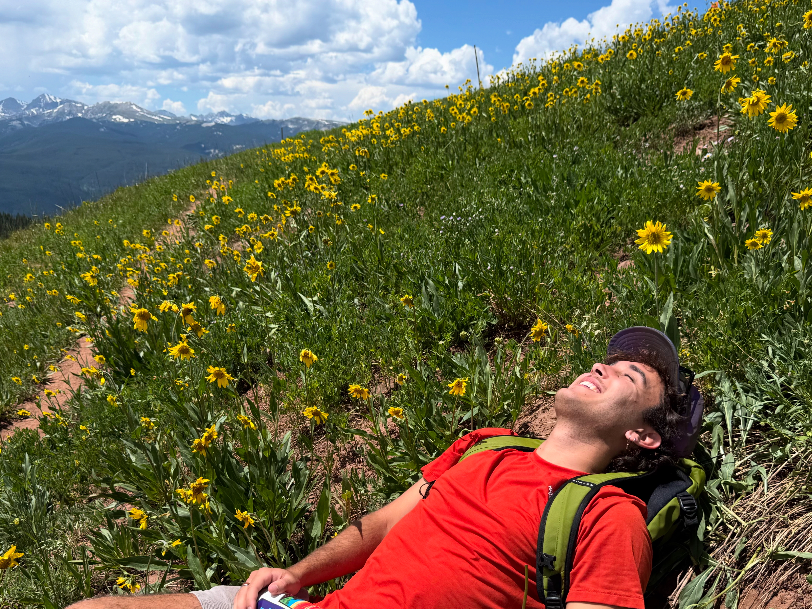

About Me
What I'm doing when I'm not sitting behind a screen & coding.
Photo highlights
I LOVE to be outside. Camping, hiking, sight-seeing, traveling, anything.


Tip: hover to pause.
Fun facts
Outside of school
- I love traveling + photography.
- I’m really into staying active (outdoors + gym) to keep my mental balance.
- I’m always planning the next road trip.
Inside of school
- I’m into human behavior + why people make the choices they do.
- I like building clean + modern interfaces.
- I’m happiest when I’m working on something that helps people in the realm of mental health.
Photography
Showing off my photography skills :) Here are a couple of my favorite shots I've taken.